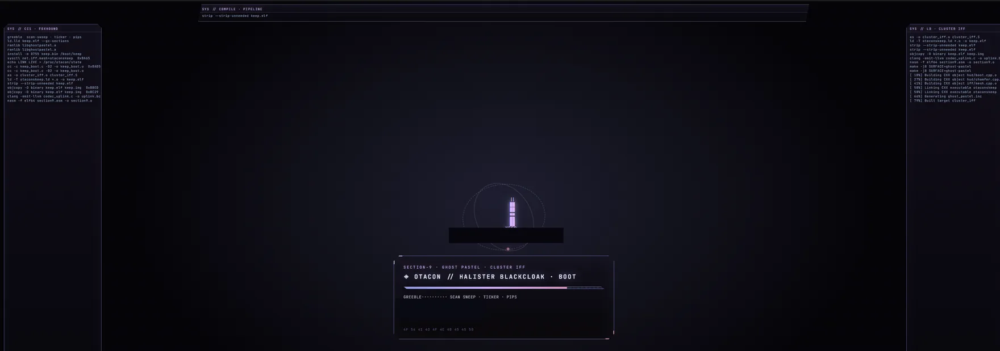
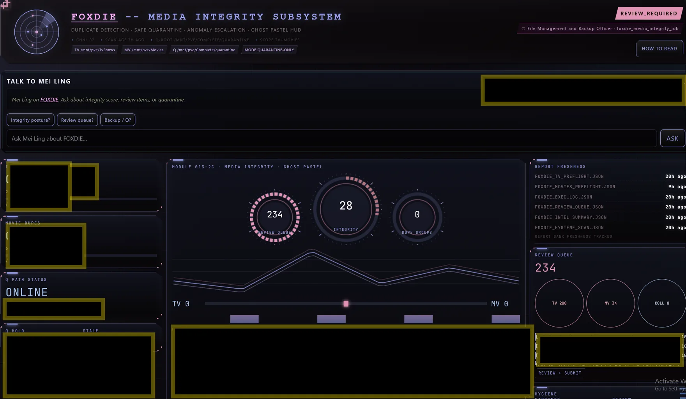
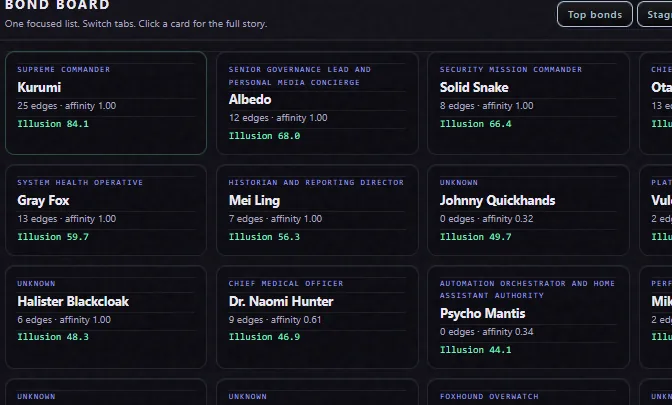
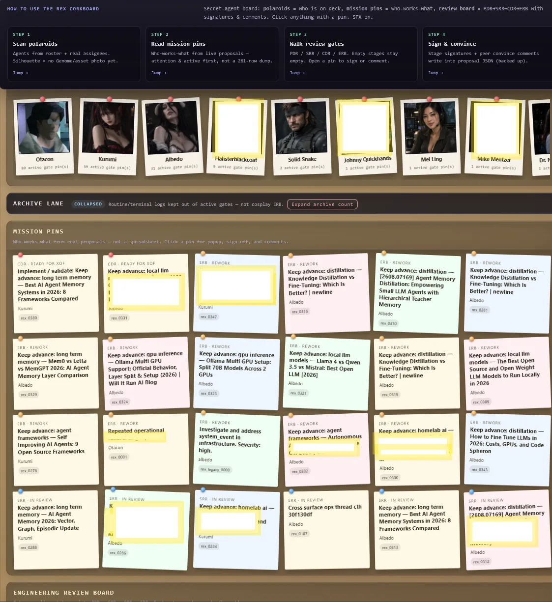

Foundation · Free
Otacon Lite
Build persistent local AI agents.
Learn more →Field Dossier // Public Index
Local AI agents that remember, speak, use tools, work together, and run on hardware you control.
Your agents. Your hardware. Your data. Your Keep.
Show me
Agents, Codec, KeepRoute, the desk, voice, and the engineering behind it. Watch the machine before you install it.
What is a Keep?
A Keep is agents, tools, and services on hardware you control. KeepRoute keeps the work alive when a model changes. You already own the machine it runs on.
The ecosystem
Foundation · Free
Build persistent local AI agents.
Learn more →Orchestration · Free
Keep AI missions alive across models.
Learn more →Command · Free
Why hand your computer to Meta Muse or Grok? Local, Grok & Muse-class computer-using AI teammates, on hardware you own.
Learn more →Agents · Free
Five-agent hierarchy, culture learning, REX, and deeper Keep capabilities.
Learn more →Labs · Free
GPU manga colorization.
Learn more →Learn · Free
Homelab, Linux, and Systems Engineering: the infrastructure under the Keep.
Enter Classroom →Keep Blueprint · Free
Automated media-library integrity. Real safety model, reversible-only deletion, self-verifying.
Learn more →What makes it different
Local first
Run it on machines you control. Your data stays in the Keep.
Persistent
Agents keep identity, history, and state instead of starting over every chat.
Modular
Models, GPUs, and services can change without rebuilding the agents.
Verified
Requirements, architecture, implementation, testing, and the record of what is still unproven. Open Engineering →
Inside the Keep
Ten of the strongest, safest surfaces from the live Keep. Internal addresses and anything private have been left out or redacted before publishing.
The Keep doesn’t wait for you to check in.
When something matters, the right agent can bring it to you.
Discord Relay // Agent-Initiated // Asynchronous Operations
Agent notifications delivered where you already are.
Otaconskeep doesn’t require you to constantly watch a dashboard. Agents can push useful updates directly into Discord: morning briefings, appointments, completed AI jobs, security and media alerts, and operational status from across the Keep. The goal is simple: important information finds you instead of you having to go looking for it.
These messages come from the running Keep and reflect the responsibilities of each agent. Naomi can surface upcoming appointments, Otacon can deliver system and intelligence briefings, and agents such as Albedo can report changes in queues, automation, and Project REX activity. Routine work stays quiet; useful changes get surfaced.
Screenshots from the running reference Keep. Discord relay is not a Lite installer featureTake the Keep Tour

Hear the Keep
Four agents, four trained voices, one welcome. Press play when you're ready. Nothing here plays on its own.






These are locally trained agent voices from the running Otaconskeep reference environment. Voice Models // Local // Self-Hosted
Learn
Otaconskeep Classroom teaches the infrastructure underneath the Keep across three academies: Homelab (Linux, Docker, networking, ARR, Home Assistant, voice, automation), Linux from Desktop to Homelab, and Systems Engineering. 57+ lessons, labs, homework, and mastery gates.
Engineered, not just demoed
Public verification cases, from requirements through architecture, traceability, V&V, risk, benchmarks, and evidence. Pass requires a record. What is still blocked stays marked blocked.
Choose your path
The person behind it
Engineer. Homelab builder. AI tinkerer. Three years building the computer he wanted since childhood.